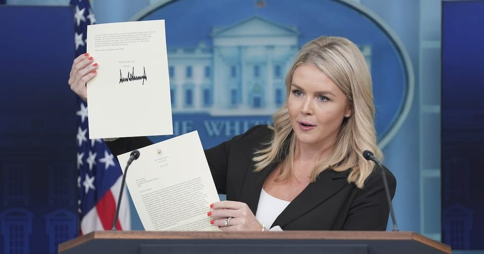

世界苦茶07月16日新闻 | 37条 | 中央城市工作会议市场冷淡

中央城市工作会议市场冷淡 | 中国6月房价加速下跌 | 特朗普支持乌克兰打击俄罗斯本土 | 特朗普指示NASA不要发布气候报告
今日三条新闻分析
苦茶数据
美元兑人民币：7.18（昨日7.17，前日7.17）
美元兑日元：148.88（昨日147.62，前日147.40）
上证指数：3498（昨日3501，前日3525）
标普500指数：6243（昨日6268，前日6259）
比特币：117459（昨日117023，前日121286）
布伦特原油：68.89（昨日69.04，前日70.56）
中国新闻
• 李家超支持同性伴侣法案 ：香港行政长官李家超星期二表明支持赋予同性伴侣有限权利的法案，并表示会协助立法会尽快完成审议。这项法案目前遭到多名建制派议员反对，面临被否决的可能。综合法新社、《星岛日报》和东网报道，香港政制及内地事务局7月2日宣布拟设立同性伴侣关系登记机制，允许已在海外登记结婚的同性伴侣在港登记，并享有医疗决定、医院探访及身后事处理等有限权利。港府提出上述立法，是为回应香港终审法院2023年9月就一起同性婚姻权益案作出的裁决。法院裁定，政府须在裁决生效后的两年内建立“替代框架”，确保同性伴侣关系获得法律认可。
• 中央城市工作会议召开 ：中国时隔10年再度召开中央城市工作会议，提出转变城市发展理念，更加注重以人为本。其中，将加快构建房地产发展新模式，稳步推进城中村和危旧房改造。据新华社报道，中共中央城市工作会议7月14日至15日在北京举行。中共中央总书记、国家主席、中央军委主席习近平出席会议并发表讲话。会议说，中国城镇化正从快速增长期转向稳定发展期，城市发展正从大规模增量扩张阶段转向存量提质增效为主的阶段。城市工作要深刻把握、主动适应形势变化，转变城市发展理念，更加注重以人为本；转变城市发展方式，更加注重集约高效；转变城市发展动力，更加注重特色发展；转变城市工作重心，更加注重治理投入；转变城市工作方法，更加注重统筹协调。 （翻評：股市兩天的反應說明了市場對城市工作會議的態度。）
亚太印太新闻
• 波音燃油开关引发排查 ：印度航空客机空难初步调查揭示燃油开关或存在异常后，多国政府下令航空公司检查多款波音机型的燃油开关。路透社报道，印度航空客机于6月12日发生坠机后，印度民航总局已责成相关航空公司检查波音787与737等机型的燃油开关装置。尽管波音公司与美国联邦航空管理局近日均指出，其客机燃油开关锁定机制符合安全标准，但多家印度及国际航空公司已展开自主排查。据悉，美国联邦航空管理局在2018年曾发出建议，要求包括波音787在内的部分机型运营方检查燃油开关锁定功能，以防误触，但这个建议并非强制性。
• 日本预估大米将增产 ：日本农林水产大臣小泉进次郎星期二宣布，2025年主食用大米的预估产量将达735万吨，较2024年实际产量增加56万吨，或创下自2004年开始统计以来的最大增幅。共同社报道，农林水产省的调查显示，截至6月底，全国水稻种植意向持续上升。此次公布的种植意向数据显示，预计增产量比4月底的调查结果进一步增加16万吨，反映出农户种植积极性有所提升。在大米价格方面，尽管政府投放储备米后超市等通路的大米平均售价有所回落，但高端品牌米价格依然坚挺，这在一定程度上刺激了农户的生产意愿。
• 泰国推迟征旅游入境费 ：泰国推迟至2026年向外国游客征收入境费。《民族报》报道，泰国官员确认，规划已久的外国游客入境费措施将不会按原定计划在今年内落实。负责审核这项计划的旅游与体育部长索拉翁认为，由于外部不确定性持续存在，目前并不适宜向游客征收入境费。旅游与体育部助理部长差克拉博解释说：“我们必须等到今年第四季度，以评估旺季的国际游客需求。”
• 中资助力印尼电池回收 ：印度尼西亚政府正发展电动车电池回收产业，以完善电动车生态体系，中资企业在这过程中通过资金和技术起到助推作用。电池回收是确保电动车产业可持续发展的重要一环，但印尼自2022年出台电动车产业发展路线图至今，电池回收工作的发展步伐滞后。一些被诟病的不足之处包括电池废料没有安全和妥善处理，以致有害物质引发社区健康问题；电池废料处理的相关条例不完善，以及处理设施不足，致使运送废料成本偏高。印尼智库必要服务改革研究所电力系统与分布式能源研究员法里斯接受《联合早报》访问时说：“印尼若要打造可持续发展的电动车枢纽，回收工作会非常重要。目前在监管框架、技术能力、可获得的废旧电池数量、商业模式等方面仍有不足。”
• 赖清德延后十讲演说 ：台湾总统赖清德因台风影响无限期延后争议不断的“团结国家十讲”行程，民进党内部对此松一口气，呼吁赖清德在罢免行动中“停看听”。台湾《联合报》报道称，民进党原本希望赖清德借由“团结国家十讲”激发支持者出门投下同意罢免票的动能，然而演说内容屡惹争议，甚至被批评扭曲历史，引发在野党猛烈攻击，让绿营内部疲于辩护应对。在6月24日的第二讲中，赖清德以“团结”为题，强调要通过选举与罢免“打掉杂质”，被在野阵营质疑“政治清洗”；6月29日第三讲中，赖清德又提及1936年五五宪草和1946年《中华民国宪法》通过时台湾未派员参与，再次被国民党批评搞错历史。 （翻評：之前的演說確實爭議比較大，我覺得敢於停止也是不錯的。）
• 赖清德将出访中南美 ：台湾总统赖清德将于下月出访中南美洲，期间将过境美国纽约和达拉斯。巴拉圭总统培尼亚在一场投资论坛上宣布，赖清德将于下月到访。台湾《联合报》星期二引述消息人士报道，赖清德预计8月到中南美洲友邦进行国事访问，期间将过境纽约和达拉斯。这是赖清德就任台湾总统后，第二度出访。根据规划，赖清德将访问南美洲唯一友邦巴拉圭，以及两个中美洲友邦危地马拉和伯利兹。
• 台湾民调赖清德满意度下滑 ：最新民调显示，台湾总统赖清德的满意度下跌5.8个百分点，走入执政困境。据台湾《联合报》报道，台湾民意基金会星期二发布的最新民调结果显示，42.9%的受访者认可赖清德的施政表现，44.5%不赞同。相较于前一次调查，赖清德的满意度下降了5.8个百分点，满意与不满意再度出现“死亡交叉”。
• 日本防卫白皮书聚焦中俄 ：日本2025年国防白皮书出炉，内容以俄罗斯入侵乌克兰和中国的军事发展指出，“国际社会正面临战后最大的考验，进入一个新的危机时代”。白皮书也以周边局势为由，强调必须提升国防力量，重点将放在研发有利于扩大反击能力的导弹系统。日本防长中谷元星期二在内阁会议上发布2025年版《防卫白皮书》，以陆海空三军的卡通图像为封面，以500多页阐述世界局势。其中专门讲中国的章节，篇幅大增，多达39页，分别聚焦中国本身的军力，对各国的关系，以及对美关系。日本媒体齐齐高调引述白皮书内描述有关中国战机和军舰行动的内容，指出日本周边发生一系列事件，包括中国军机侵犯领空以及“辽宁”号航空母舰穿越毗连海域。
科技新闻
• TikTok寻求与加政府谈判 ：中国科技巨头字节跳动旗下短视频平台TikTok正寻求与加拿大政府就数据安全方案展开磋商，以避免被迫撤出加拿大市场。据彭博社星期二报道，TikTok加拿大政府事务总监德艾尔接受采访时说，TikTok至今尚未得到渥太华的回应，“我们仍在争取坐上谈判桌”。加拿大政府去年11月以国家安全为由，要求TikTok关闭在加拿大的子公司。受此影响，TikTok本月开始暂停在当地的文化项目与赞助活动。尽管如此，加拿大用户仍可在应用商店继续下载和使用TikTok。
• 墨西哥配音员示威 呼吁修法避免AI抢饭碗： 墨西哥的配音从业人员上周日走上街头，抗议人工智能对相关产业日益增长的威胁，并且呼吁当局制定法规，避免未经授权的人声复制影响其生计。在墨西哥市的革命纪念塔前，数十名配音员高举标语，有些标语上面写着：“我不想被 AI 取代”。曾为迪士尼角色黛西鸭配音的 52岁配音员巴瓦表示：“我们要求将声音列为一种应受保护的生物识别特征”。巴瓦还提到墨西哥国家选举机构先前在TikTok发布的一段影片。这段6月1日上传的影片使用已故配音员拉瓦特的声音，感谢人民参与选举。当地媒体报道，当局并未事先取得拉瓦特的家人同意，就使用他的声音。
• SpaceX将于第四季度在越南推出星链服务： 越南官方媒体周二援引一名政府官员的话表示，SpaceX预计将从今年第四季度开始在越南推出 “星链” 卫星互联网服务。越南科技部副部长范德龙表示：“科技部的目标是在该投资者完成投资程序并在越南建立法人实体后立即批准使用低轨道卫星的试点服务，目标是在2025年第四季度部署服务。”SpaceX目前正在与越南财政部合作，以完成在当地设立一家全资子公司所需的程序。今年四月有消息称，SpaceX正准备在越南建立一个用于星链卫星的地面站，并计划建造更多。
财经新闻
• 特朗普的“关税信”掀起外交风波，引起多国领导人震惊： 特朗普总统在第二任期初未能完成“90天达成90个贸易协定”的承诺。今年4月的“解放日”更是引发了金融市场恐慌。特朗普表示，与几十个国家分别谈判定制化贸易协议“太花时间”，因为“有200个国家，你不能跟每一个都谈”。因此，他另辟蹊径，改以一系列前所未有的总统函件方式，向各国领导人发送关税通知，不仅重塑了贸易谈判的方式，也挑战了传统外交的语气与形式。这些函件多为填空式模板，写入国家领导人名字和具体关税率，使用特朗普惯用的社交媒体风格大写单词，偶尔还有拼写或排版错误。信件通常包括：热情问候、一段指责、关税威胁、一项新截止日期，以及一个“若满足特定条件，我们或许会考虑调整本信”的“下台阶”。不同于传统外交辞令中对“持久互尊”的呼吁，特朗普的信以“感谢您对本事宜的关注！”和“祝一切顺利”收尾，并签上自己典型的连笔粗体签名。他特别关注对加拿大和巴西的信件，加拿大是他长期斗争与挑衅的对象，而对巴西开征50%关税似乎更是出于私人恩怨而非经济考虑。
• 中国房价持续下跌 ：中国6月份房价加速下跌，其中新房价格出现八个月以来最大月度跌幅；1至6月房地产投资也大幅下降，同比降幅达11.2%，为历史最低水平。中国国家统计局周二公布数据显示，70个大中城市6月新房价格环比下降0.3%，降幅比上月扩大0.1个百分点，新房房价下降的城市上升至56个；二手住宅市场同样不景气，环比下降的城市上升至69个，为去年10月以来最差表现。中国国家统计局副局长盛来运周二在国民经济运行情况记者会上表示，目前房地产销售面积和价格同比都在下降，“要以更大力度来推进房地产止跌回稳”。
• 美印达成19%关税协议 ：美国总统特朗普说，他与印度尼西亚达成一项新的协议，美国将对来自印尼的商品征收19%的关税，而美国出口印尼的商品将免税。特朗普此前致函通知印尼总统普拉博沃，威胁称美国将从8月1日起对印尼商品征收32%的关税。彭博社报道，特朗普星期二告诉记者：“他们得付19%关税，我们完全不用，我们将获得进入印尼市场的全面准入。” （翻評：看到文本前根本不信。）
• 日本选举前债市承压 ：日本本周末将举行参议院选举，执政联盟选情不稳引发市场高度关注。三井住友银行警告，若政局生变，日本债市恐重演英国“利兹·特拉斯时刻”的动荡。彭博社报道，数据显示，20年期及以上期限的日本国债收益率本月已累计上升至少20个基点。这一走势反映了全球债券市场的广泛抛售情绪，背后根源在于投资者对各国财政可持续性的集体焦虑。据报，日本执政的自民党联盟在此次选举中可能面临失利。在竞选期间，各主要党派纷纷推出民粹化倾向的财政承诺，包括发放现金补贴、下调消费税及扩大教育支出等。分析人士担心，这些举措若付诸实施，可能削弱市场对财政纪律的信心，从而引发“债券卫士”的激烈反应。
• 欧盟拟对美商品加税 ：若欧盟与美国之间的贸易谈判破裂，欧盟委员会拟对一系列美国出口商品加征关税，包括飞机、机械、汽车、化工品及医疗设备等高值项目。路透社报道，这是欧委会提出的第二轮关税方案，旨在回应美方对汽车及零部件征收关税，以及目前对多数进口商品设定的10%基准税率。欧盟委员会作为27国的贸易政策执行机构，目前已将相关清单送交成员国审议。美国总统特朗普近日表明，将从自8月1日起对欧盟商品设定30%的基准关税。欧盟官员对此强烈不满，认为此举“不可接受”，恐将破坏全球两大经济体之间的正常贸易秩序。
• 万科预告巨额亏损 ：中国房地产商万科公告，公司上半年亏损或高达120亿元人民币。此情况显示，中国房地产市场依旧未走出低迷。综合彭博社和澎湃新闻报道，万科星期一在港交所发布2025年半年度业绩预告称，公司今年上半年净亏损预计介于100亿至120亿元。公司去年同期亏损98.5亿元。万科在公告中说，受房地产开发项目结算规模显著下降，毛利率仍处低位；部分大宗资产交易和股权交易价格低于账面值以及新增计提资产减值等多重原因影响，万科今年上半年业绩仍显示亏损。
• A股二季度表现分化 ：中国第二季度经济增长数据未能显著提振市场信心，星期二中国股市表现分化，涨跌互见。截至星期二下午1时半，上证指数下滑0.6%、科创50指数跌0.29%、深证成指微涨0.18%、创业板指涨1.32%。从盘面上看，大金融领跌，地产、医药、电力、光伏、黄金、锂矿、化工、煤炭跌幅靠前；算力产业链走强，CPO概念股领涨。市场近4700股下跌。
• 美国拟调查无人机进口 ：美国对无人机、无人机零部件以及太阳能关键材料多晶硅进口展开调查，为可能对这些商品征收关税买下伏笔。彭博社报道，美国商务部7月1日根据《贸易扩张法》第232条启动这项调查。这是特朗普政府对被认为对国家安全至关重要的行业进行审查，并可能祭出关税措施的最新行动。特朗普政府也对半导体、药品和其他商品进口展开了类似的调查。
• 面临新一轮美方关税，日本首相石破呼吁减少对美依赖： 日本首相石破茂在周四表示，在安全、粮食和能源等关键领域，日本需要减少对美国的依赖，因为东京正面临三周后可能被美国征收新关税的威胁。他在电视新闻节目中表示：“如果他们认为，日本因为依赖美国就必须听命于美国，那我们就必须努力在安全、能源和粮食方面实现更大的自给自足，减少对美国的依赖。” （翻評：這裡的關鍵就是，減少對美依賴之後，有沒有不依賴中國的選項？）
俄乌战争
• 乌议会再延战时状态 ：乌克兰议会投票通过了总统泽连斯基提呈、再次延长国家战时状态和军事动员90天的总统令草案。乌克兰国家通讯社引述乌议员热列兹尼亚克的话说，320名议员星期二投了赞成票。通过法案所需的最低票数为226票。根据草案，乌克兰国家战时状态和军事动员将在8月6日到期后延长至11月5日。这是自2022年2月俄乌冲突升级以来，乌克兰议会第16次批准延长该法令。
• 俄愿谈判但拒最后通牒 ：美国总统特朗普威胁对购买俄罗斯出口产品的国家实施制裁后，俄罗斯副外长里亚布科夫星期二指出，莫斯科愿意就乌克兰问题展开谈判，但不会接受任何最后通牒的施压。路透社报道，特朗普星期一宣布将向乌克兰提供新一轮武器援助，并警告称，若俄罗斯不接受和平协议，将对其出口产品的买家实施制裁。
• 特朗普私下支持乌打俄本土 ：英国《金融时报》引述知情人士报道，美国总统特朗普近日与乌克兰总统泽连斯基私下交流时，鼓励乌方加大对俄本土的深度打击力度。报道称，特朗普甚至直接询问泽连斯基，如果美国提供具备足够射程的远程武器，乌克兰是否有能力打击莫斯科。两名熟悉谈话内容的消息人士透露，特朗普明确表达了希望乌克兰能将打击范围延伸至俄罗斯境内战略目标的意图。这一表态若属实，或将加剧地缘紧张局势。
• 乌无人机袭击俄多地 ：多名俄罗斯地方官员说，乌克兰无人机在夜间对沃罗涅日州、利佩茨克州和布良斯克州等多地发动袭击，造成至少18人受伤，多处民宅和基础设施受损。路透社报道，沃罗涅日州州长古谢夫在即时通信平台Telegram发文说，俄军防空部队当晚在沃罗涅日州击落12架无人机。沃罗涅日州与乌克兰接壤，是本轮袭击的主要目标。袭击共造成16人受伤，其中包括一名青少年。沃罗涅日市区及郊区的多栋住宅楼受损，部分商业设施亦遭破坏。另据网络流传的视频画面，一架疑似无人机的飞行物在沃罗涅日市一条住宅街道上空坠落，引发巨大火球，现场一度陷入混乱。这则视频尚未获得独立验证。
国际新闻
• 多州起诉冻结教育拨款 ：美国20多个州政府星期一在罗德岛州一家联邦法院提起诉讼，要求特朗普政府解冻约68亿美元教育经费。新华社报道，由加利福尼亚州牵头的原告联盟在起诉书中说，被特朗普政府冻结的联邦教育经费用于课后班、夏令营、英语能力提升、教师招聘与培训、农场工人及子女教育等。联邦政府应在7月1日前向各州拨付这笔资金，但教育部6月30日通知各州，无法按期拨款。起诉书说，特朗普政府在没有提供合理解释的情况下冻结资金，导致大量学校出现混乱，一些暑期班和课后项目被迫取消。
• 欧盟称以未全面落实协议 ：欧盟人道援助事务专员拉比卜说，以色列虽已采取部分积极措施，但尚未完全落实与欧盟就加沙人道物资运输达成的协议。路透社报道，拉比卜星期二在布鲁塞尔出席欧盟外长会议前对媒体说：“我们确实看到了一些积极进展。确实有卡车可以进入加沙，但我们并不清楚具体数量。可以肯定的是，这项协议尚未全面执行。”
• 美议员指责特朗普削弱国际地位 ：美国参议院外交关系委员会的民主党议员指责特朗普政府通过贸易战，以及削减对外援助和媒体机构等方面减少国际参与，进而把全球领导地位拱手让给中国。这些民主党议员在星期一发表的报告中说，随着特朗普政府削弱对联合国等国际机构的支持、减少对外援助项目和全球媒体机构的资金支持，以及缩减美国外交体系，中国正在全球范围内获得更多影响力。他们抨击特朗普总统领导下的美国正在“削弱盟友和经济伙伴关系，削弱我们在竞争中超越中国的能力。”
• 美国多地暴雨致瘫痪 ：美国东岸多地遭洪水侵袭，多州宣布进入紧急状态。纽约市多个地铁站遭大水浸泡，好些地铁路线运行中断或延误。美国国家气象局报告，移动缓慢的雷暴在纽约、新泽西和康涅狄格州徘徊。星期一夜间，三州多个地点遭突发性洪水侵害，多地交通瘫痪、许多车辆被淹没，以及多个司机和乘客受困。纽约市多个地铁站也被洪水淹没，纽约大都会运输署一度停止或延误多条线路的运行。其中，大都会北方铁路说，哈莱姆线部分区段暂停服务，纽黑文线部分列车被延误。
• 特朗普质疑欧洲援美意愿 ：美国总统特朗普说，他相信英国在战争发生时会支持美国，但对欧洲联盟国家是否具备同样意愿表示怀疑。他指出，这是他迄今未与欧盟达成贸易协议的重要原因之一。路透社报道，特朗普日前接受英国广播公司采访时坦言，尽管北约成员国已承诺增加国防支出，但他对这些国家在关键时刻是否愿为美国出战仍存疑虑。特朗普说：“北约的问题之一正如我所说，美国要为他们作战，但如果美国陷入战争，他们真的会为我们而战吗？”
• 联合国可持续目标多数进展缓慢 ：根据一份联合国的《2025年可持续发展目标报告》，可持续发展目标169个细项中，仅35%进展顺利，近一半进展缓慢，18%出现倒退。新华社报道，联合国星期一发布的报告显示，公共健康、教育、能源、数码互联等领域可持续发展目标取得显著进展。新增爱之病毒感染病例2010年以来下降约40%；2000年以来，疟疾防治拯救了1270万人；目前社会保障人口覆盖率超50%；与2015年相比，儿童和青年入学人数新增1亿1000万；童婚人数下降，妇女从政人数上升；2023年，全球92%的人口有电可用；互联网使用人口从2015年的40%上升至2024年的68%；关键生态系统保护水平显著提高。报告同时显示，目前的进度不足以在2030年实现所有可持续发展目标。全球尚有8亿人处于绝对贫困状态；数十亿人缺乏安全的饮用水和卫生服务；气候变化加剧；2024年武装冲突导致近5万人死亡、年底流离失所人数达1亿2000万。
• 哥本哈根成最宜居城市 ：2025年全球最宜居城市排行榜近日出炉，丹麦首都哥本哈根首次登顶，终结维也纳连续三年蝉联第一的纪录。英国广播公司报道，经济学人智库发布新报告指出，哥本哈根因在“社会稳定、教育质量与基础设施”三项核心指标上取得满分，成功问鼎榜首。值得关注的是，2025年榜单的最大变化并非仅限于分数浮动，而是与全球安全局势动荡有关。维也纳因2024年发生的炸弹威胁事件，以及近期针对火车站的袭击图谋，安全评分受挫，排名下滑。
• 英国2025年恐将每天失去一家酒吧，啤酒价格飙升成主因： 英国啤酒与酒吧协会发出警告称，预计今年英国每天将关闭一家酒吧，主要原因是啤酒价格飙升和经营成本不断上升。BBPA代表着英国约45,000家酒吧中的20,000多家。据其预测，今年英格兰、苏格兰和威尔士将关闭378家酒吧，造成约5,600人失业。作为对比，2024年关闭了350家酒吧。这一趋势自2000年以来已导致超过15,000家酒吧关闭。不过，BBPA指出，政府“现在介入还不算晚”，仍有机会解决这一问题。
• 联合国草案报告称性别焦虑具有“社会传染性”： 联合国人权事务高级专员办事处就针对女性和女孩的基于性别的暴力问题发布的初步报告称，当前存在“试图将‘男性’与‘女性’的定义从生物性别中剥离”的趋势，并企图“抹去女性的法律类别”。这份由联合国女性与女孩暴力问题特别报告员Reem Alsalem撰写的报告指出，这类努力实际上是否认了女性“在法律与社会中作为独立类别应有的身份认同”。报告引用了性别批判组织“苏格兰女性之声”所提交的意见，认为一旦联合国会员国接受跨性别女性的法律地位，就是在“剥夺女性作为一个特别脆弱群体、应获得国际法特别保护的合法地位”。
• 特朗普政府称不会在NASA官网发布重要气候变化报告： 最新的气候变化评估报告于2023年发布，指出气候变化正以多种方式影响全美各地人民的安全、健康和生计，少数族裔群体，尤其是美洲原住民，受到的影响尤为严重。本周一，特朗普政府又采取了一项措施，使公众更难获取法律规定必须公开的重要气候科学评估报告。本月早些时候，承载这些权威、同行评审的国家气候评估报告的政府网站已无法访问。这些网站原本帮助地方政府和公众了解本地未来可能面临的气候风险，以及如何进行适应。
• 以色列极端正统派政党因征兵法案退出执政联盟： 以色列的极端正统派政党“联合妥拉犹太教党”宣布退出由内塔尼亚胡领导的执政联盟，原因是长期未能就豁免神学院学生服兵役的法案达成一致。UTJ七位议员中已有六位递交辞呈，该党主席戈德克诺普夫一个月前就已辞职。这将使内塔尼亚胡在以色列议会中仅剩61席的微弱多数。另一极端正统派政党“沙斯党”是否也会退出尚不明确。“妥拉之旌”派系在声明中表示，在与其宗教领袖协商后，鉴于政府多次违反其承诺，未能保障那些全心投入学习的神学院学生的地位，因此他们决定退出联合政府。极端正统派政党认为，确保神学院学生服役豁免是他们于2022年底加入执政联盟的重要条件之一。